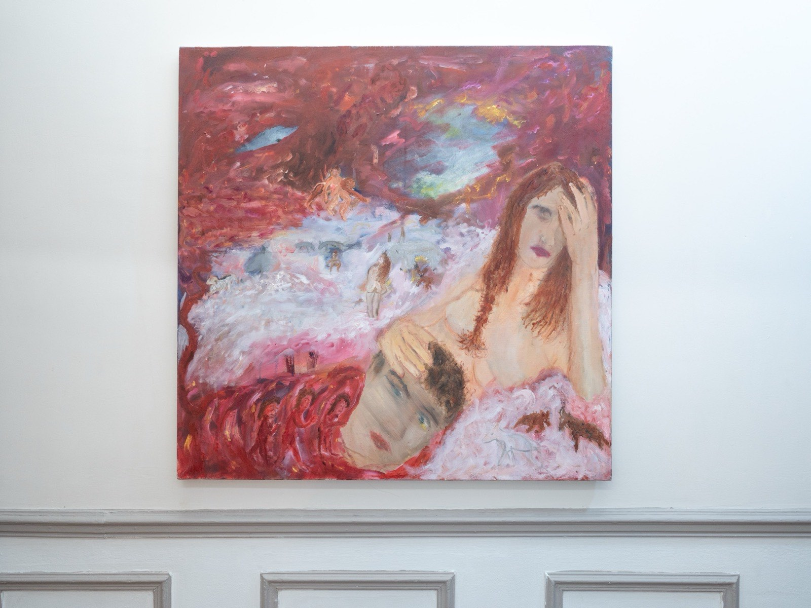
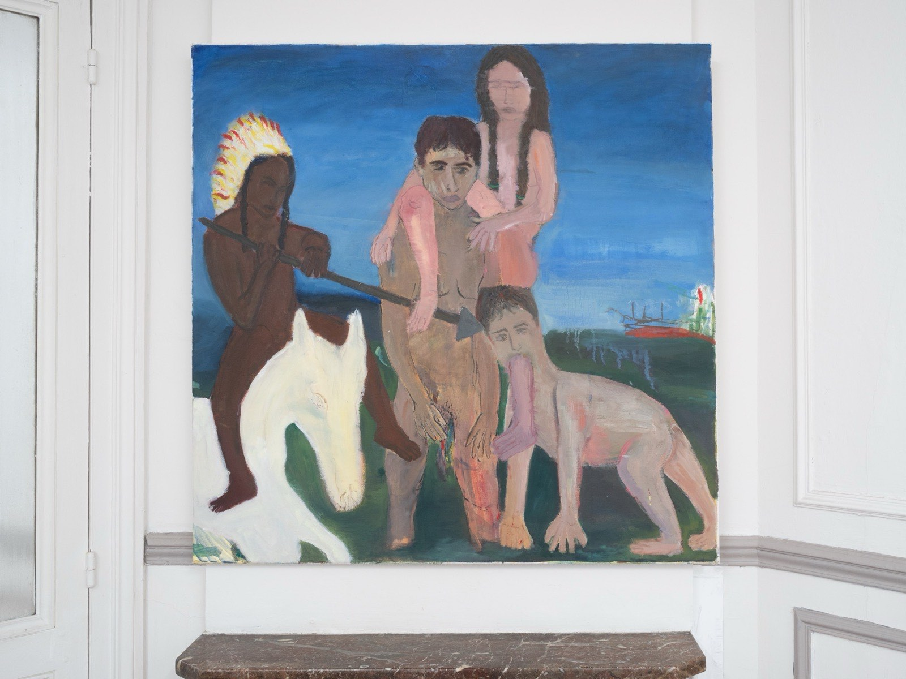

Enam Granoth
Entrée 004 · Magenta Made Me Hardcore
Enam Granoth (b. 2002, Tel Aviv) is a self-taught painter and draftsman based in Paris. Working primarily with oil and acrylic, he creates surreal, expressive landscapes filled with graphic scenes and bold colors, embarking on a search for meaning through evocative, almost childlike symbols. Recurring central figures suggest an overarching narrative—one character fractured into endless facets and roles. Through his work, Granoth explores the shifting roles of humans and relationships that resist, reflect, or distort what he witnesses in his own life.
Recent presentations include For There Were No Spurs at the Ethnographic Museum – Folk House Porakishvili, Tbilisi, and the solo exhibition Napkin Drawings at Cassata Gallery, Tel Aviv, and participation in Tbilisi Art Fair. He has also participated in the DiscoverArtists group exhibition in Hydra, Greece, and residency programs including the Ria Keburia Residency in Georgia, the Kuba Residency in Germany, and DiscoverArtists in Greece. His works are held in private collections across the UAE, the USA, and Europe.
Œuvres — 2 entrées

Enam Granoth, Raw meet, 2026. Huile sur toile, 80 × 80 × 2 cm. Courtoisie de l'artiste. Kramer.
Demander la fiche →
Enam Granoth, Ritual of becoming, 2026. Acrylique et huile sur toile, 100 × 100 × 2 cm. Courtoisie de l'artiste. Kramer.
Demander la fiche →